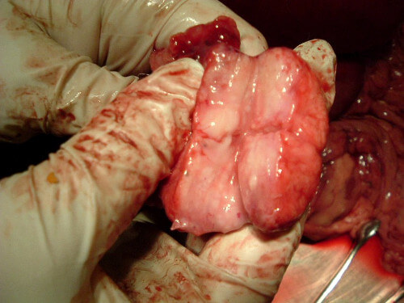

De l'éditeur: L'OMS, "la Croix-Rouge", "l'Association de lutte contre le cancer" et d'autres institutions médicales internationales sonnent l'alarme. Selon eux, la prostatite est l'une des principales menaces pour la vie des hommes dans le monde. Au moins 75% de tous les patients meurent de complications à la fin. Nous avons discuté avec le chef de l'Institut d'urologie, Aurélien Bertrand, de la question de savoir si la prostatite est si dangereuse et comment y faire face.
- Bonjour, Aurélien Bertrand. Pouvez-vous commenter les données internationales sur le danger de la prostatite?
- Malheureusement, je ne peux qu'affirmer que c'est correct. En effet,
environ 75% de tous les hommes qui ont une inflammation de la prostate meurent d'un
cancer. De plus, au cours des dernières années, l'espérance de vie de chaque
patient diminue. Si auparavant un homme qui avait reçu un diagnostic de prostatite
pouvait compter sur au moins 10 à 20 ans de vie, maintenant cette période est de 3 à 12
ans.
Si on parle de notre pays, alors on a le pourcentage d'hommes qui meurent est
encore plus élevé à cause de la mauvaise situation environnementale et la qualité de la
nutrition. En moyenne, 7 à 8 hommes sur 10 meurent. Et je ne pense pas que la situation
changera dans un proche avenir.
- Quel est le problème du traitement de la prostatite? Après tout, pour autant que l'on sache, la maladie peut maintenant être traitée ou du moins contrôlée.
- Oui, la prostatite peut maintenant être traitée. Mais le problème est
que la plupart des hommes malades ne consultent tout simplement pas les médecins. Une
partie d'entre eux ne considère pas cela comme dangereux, une partie – honteuse. En
conséquence, on obtient une situation où les malades ignorent tout simplement la
maladie. Et s'ils demandent de l'aide, ils le font le plus souvent à ces moments où il
est trop tard et où une tumeur cancéreuse commence à se développer.
Il faut comprendre que la prostatite est une maladie mortelle, dont l’un des principaux dangers est la transformation en tumeur cancéreuse de la prostate. Ce qui, à son tour, conduit souvent à la mort du patient. Et aujourd'hui, la plupart des décès dus aux complications de la prostatite ne sont que des tumeurs cancéreuses. Plus l'environnement est mauvais et plus la charge sur le corps du patient est élevée, plus la prostatite devient rapidement une tumeur mortelle . Laissée sans contrôle ni traitement, la maladie se développe parfois rapidement, conduisant au cancer en 1 à 2 ans.
Voici quelques exemples terribles qui, malheureusement, sont très courants dans la pratique quotidienne.
1. Un homme de 47 ans pendant une intervention chirurgicale pour enlever une tumeur maligne de la prostate. Malheureusement, le patient n'a pas été sauvé.

2. Et c'est une tumeur enlevée d'un autre patient, qui a heureusement survécu. Elle s'est développée en un an et demi après les premières douleurs de la prostate.

«La prostatite est une maladie mortelle dont l'un des principaux dangers est la transformation en tumeur cancéreuse de la prostate»
- Existe-t-il des options pour un traitement efficace de la prostatite à domicile? Cela résoudrait le problème des visites chez les médecins et du temps libre.
- Si on parle des soi-disant "remèdes populaires", alors ils sont
absolument inefficaces. De plus, ils aggravent souvent la situation. La seule chose qui
aujourd'hui peut être utilisée pour traiter la prostatite à la maison et qui donne de
très bons résultats sont des gélules de . Le médicament a une composition
vraiment
unique et ce remède aide vraiment de nombreuses personnes. Maintenant, il y a une vraie
guerre pour les lots de entre les réseaux de cliniques internationales. Mais
pour
autant que je sache, le Organisation Mondiale de la Santé a autorisé l'importation et la
vente du
médicament.
a été créé au fil des ans par une grande équipe de développement qui comprenait des experts européens de premier plan et des médecins praticiens de cliniques qui traitent quotidiennement la prostatite.
- On dirait que vous êtes sûr à 100% de ce médicament. Des essais cliniques, ont-ils été menés?
- Bien sûr. Avant la certification, chaque médicament subit des essais
cliniques. Et n'a pas fait exception. Les résultats des essais cliniques ont
été un
véritable choc pour les urologues. Environ 85 à 87% de tous les patients se sont
rétablis sans cas récurrent. Chez tous les autres, leurs symptômes ont complètement
disparu et les processus inflammatoires dans la prostate ont arrêté. Néanmoins, il
aurait pu y avoir certains cas récurrents, qui ont cependant disparu lors d'une
utilisation ultérieure de .
est bon car il résout le problème globalement. Les symptômes disparaissent dans les premiers jours. Ensuite, les processus inflammatoires disparaissent, la puissance est entièrement restaurée. Et la chose la plus importante est la possibilité que l'inflammation de la prostate dégénère en cancer est complètement bloquée.
En dehors de l'Europe, le médicament a été certifié aux États-Unis. Ainsi, à l'Université d'urologie de Berlin et Centre de recherche sur la prostatite de Michigan. Dans les deux cas, les essais cliniques ont pleinement confirmé les données. Les Allemands ont même obtenu un taux de récupération plus élevé.
- La question suivante qui se pose est de savoir comment les patients peuvent-ils désormais obtenir ?
- Si nous parlons de chaînes de pharmacies, alors, malheureusement, le
médicament peut toujours être acheté dans des pharmacies uniques. Le problème est que le
secteur de la pharmacie est une telle grande entreprise. Qui a soif de super profits. Et
le remède est exactement le cas lorsqu’on peut exiger presque n'importe quel
argent
pour un médicament. Le fabricant, quant à lui, souhaite rendre aussi
accessible au
public que possible. Ce qui a conduit à un conflit violent, à la solution auquel le
Organisation Mondiale de la Santé s'est finalement associé. Mais, bien sûr, pendant que
les
négociations se poursuivent, il est nécessaire de donner aux patients la possibilité
d'acheter . Par conséquent, la vente du médicament a été organisée en ligne,
sur un site officiel spécial
. J'y suis allé moi-même l'autre jour pour tester et voir comment tout était fait.
En fait, tout a été organisé simplement et clairement - la commande est passée en ligne,
après quoi l'opérateur appelle et clarifie les détails, confirmant la livraison. Ce qui
est important - le paiement n'est effectué qu'après la livraison du colis avec le
médicament. Je pense que c'est important pour ceux qui commandent rarement en ligne.
Jusqu'à présent, l'achat n'est disponible que sur le site, mais maintenant le Organisation Mondiale de la Santé adopte un programme spécial de lutte contre la prostatite, qui comprend l'apparition de dans toutes les cliniques du pays. Et après cela, je pense, il sera possible de conclure un accord avec de grandes chaînes de pharmacies.
- Aurélien, merci pour vos réponses à notre édition. Y a-t-il quelque chose que vous aimeriez ajouter vous-même avant de terminer?
- Je voudrais dire que la prostatite n'est pas simplement une sorte de
"maladie honteuse". C'est une maladie mortelle qui conduit au cancer et qui
prend des centaines de milliers de vies chaque année . Si vous ne souhaitez
pas consulter un urologue ou si vous n'avez tout simplement pas accès à un spécialiste
normal, utilisez . Il est vendu au prix coutant. Et en termes d'efficacité, il
équivaut à des procédures médicales coûteuses.
P.S. En ce moment, avec le Organisation Mondiale de la Santé, on organise une promotion "Vaincre la prostatite - sauver le peuple". Par conséquent, vous pouvez désormais acheter en soldes!
Interviewé par Anne-Laure Legrand
Photo de sources
ouvertes
J’ai commandé , il y a un effet après une semaine. J'ai pensé aller à la chirurgie, maintenant tout a été annulé. J'ai 48 ans, mais je me sens plus jeune de 38 ans, je ne me l’attendais même pas)
Bénédict-
Je regrette que mon médecin local n'ait pas parlé plus tôt de la gravité du problème. Prostatite et prostatite ... Tout le monde tombe malade! Maintenant, après , j'ai oublié la douleur, mon érection s'est rétablie, ma femme dit - comme dans ma jeunesse maintenant. Je suis ravi, merci d’en avoir parlé, profond salut.
Arnold-
J'ai commandé pour moi-même. Je l'ai pris trois jours plus tard. J'ai commencé à l'utiliser, le deuxième jour j'ai dormi toute la nuit, et je n'ai pas eu une envie pressante ... Maintenant, il y a de sérieux changements, je suis pratiquement en bonne santé (je l'utilise depuis six mois). Je ne peux pas imaginer ce que ça aurait été sans le remède...
Julie-
Merci pour l'article! J'ai commandé pour mon mari, nous l'utilisons déjà.
Serge_77-
J'ai passé une commande, j'attends. L'opérateur a dit qu'il viendra chez moi (à Marseille) pendant deux semaines. J'attendrai, puis j'écrirai sur le résultat
Marc-
Je recommande . Je l’ai utilisé depuis trois mois, tout est très bon. Agréable au goût, emballage pratique, je l'ai toujours emporté avec moi en voyage d'affaires. Immédiatement, le sang dans le sperme avait disparu. Les douleurs ont disparu, je ne cours pas aux toilettes, ma vie sexuelle se rétablit déjà.
Isabelle Vienne-
J'ai regardé une émission de télé, là a été mentionné comme en passant. Ils ont dit que c'était l'un des remèdes les plus efficaces cotre la prostatite. Auparavant, ils coupaient tous ceux qui n'étaient pas aidés par les pilules.
Frédéric Roos-
a aidé mon fils (24 ans), il a eu une blessure à cause du sport, puis – une hypothermie (nous avons fait du camping). Nous l'avons porté à l'étranger pendant 2 ans, et avec , il était presque guéri en un mois. Nous continuons l'utiliser, nous espérons une guérison de 100%.
Sasha1122-
C'est juste que mon dos me fait mal, le fond lui-même. Je suis au volant tout le temps, je n'ai même pas le temps d'aller chez le médecin. Je suis arrivé chez le chirurgien et il m'a envoyé chez l'urologue. En conséquence, on a conseillé et le massage de la prostate. Je me sens déjà bien, je suis retourné au travail.
Aurèlien-
Interview sans coupures, vous m'avez ouvert les yeux sur le problème. Demain, je vais chez l'urologue. Merci!
Roland-
Je suis d'accord avec ceux qui ont écrit ci-dessus: le médicament est excellent. Il aide dans le cas de la prostatite, c’est très bon résultat, c’est le meilleur remède pour moi et pas seulement pour moi.
Odette-
Je pense que je veux acheter, mais quelque chose s'arrête ... Pourquoi sur Internet, et pas à la pharmacie? Et ce n'est pas une sorte de fraude?
Alexandre-
Odette, pourquoi pensez-vous de la fraude?, L'article dit que les pharmacies gonflent des prix, ce médicament y coûtera dix fois plus cher! Et quel genre de la fraude si on a le paiement à réception? Si vous ne voulez pas - ne le prenez pas, vérifiez le colis pour voir tous les documents et tout. J'ai commandé en juillet, on l’a livré par coursier, environ 7 jours. J'ai tout vérifié et payé. Il est possible de commander aussi par la poste, alors ils ne ramènent pas à la maison, vous le prendrez vous-même. Aujourd'hui, tout le monde vend tout sur Internet, donc on vend des médicaments. Et merci, mais comment connaissez-vous la vérité? Et où peut-on acheter un bon médicament moins cher?
Odette-
Excusez-moi, je n'ai pas compris. Je vais passer commande pour mon père, il souffre beaucoup ... (((si paiement est à réception, alors la fraude est exclue.
Eugène_Caen-
est un excellent remède. Ma femme a ordonné, j'étais en colère au début de ne pas avoir consulté. En général, il était difficile de parler des problèmes des hommes. Maintenant je suis heureux, ma femme est heureuse, nous attendons le bébé.
Marius David-
Merci pour l’indice. Je ne pensais pas être traité, je pensais que ça passerait tout seul. Maintenant, je veux oublier le problème qui m'a tourmenté pendant dix ans. Les médecins n'ont donné aucune garantie, je n'ai aucune plainte contre eux. Je vais me sauver moi-même.
Jean-
Tout est clair d'après les commentaires, il faut essayer. Je vais passer commande moi-même, j'ai enfin trouvé ce que je cherchais.